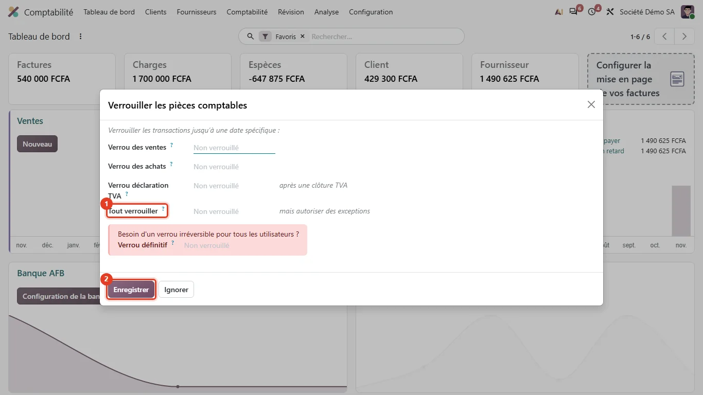

Verrouiller les périodes comptables
Objectif. Empêcher toute modification d'un mois clôturé ou déclaré.
Menu Odoo 15Comptabilité > Comptabilité > Actions > Verrouiller les dates
Étapes
- Ouvrez l'écran de verrouillage.
- Date de verrouillage pour les non-conseillers : fin du mois clôturé.
- Date de verrouillage pour tous (1) : fin de l'exercice ou de la période migrée.
- Cliquez sur Enregistrer (2).

À vérifier
- Une tentative de saisie avant la date est refusée.
À éviter
- Ne verrouillez pas avant que la balance du mois soit contrôlée.
Exercice
Verrouillez le mois dernier pour les non-conseillers.